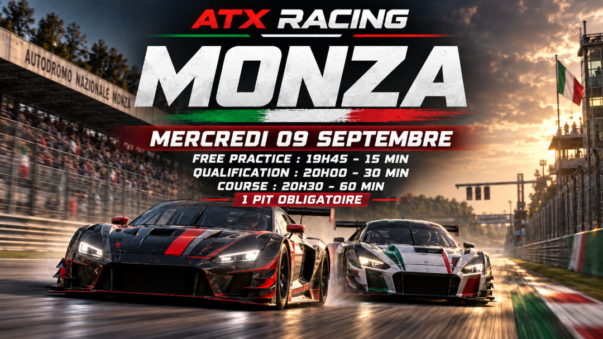

Prochaine courseMonza · 09.09.26
Inscriptions ouvertes
Des courses organisées avec sérieux, accessibles aux passionnés et pensées pour offrir une compétition propre. Inscrivez-vous, prenez le départ et construisez votre profil pilote au fil des événements.

Retrouvez chaque événement ATX Racing avec son affiche, ses horaires, son règlement et son accès aux inscriptions. Les résultats officiels seront ajoutés à la même page après la course.
Des courses de 60 minutes accessibles, compétitives et pensées pour progresser en situation réelle.
Des épreuves longues où stratégie, relais, fiabilité et maîtrise de la course font la différence.
Votre Steam ID reliera vos participations et vos résultats à un profil unique. Vous y retrouverez vos classements, vos meilleurs résultats, votre catégorie de performance et votre niveau de conduite SAFE.
Comparez les points cumulés, les victoires, les podiums, l’indice de rythme et la progression de tous les pilotes ATX Racing.
Après chaque événement officiel, sa page accueillera le classement final et les statistiques validées par la direction de course. Les résultats de la phase initiale de collecte restent consultables séparément.
Données expérimentales collectées à Monza et Paul Ricard avant le lancement des événements officiels.